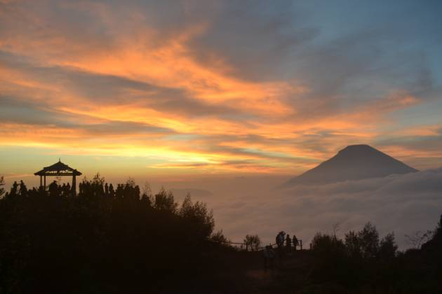

Paket Wisata 1 Hari Dieng
Harga mulai dari Rp275.000/pax
Paket ini dimulai dari Wonosobo pagi hari dan kembali sore hari. Dalam sehari kamu akan mengunjungi tempat paling ikonik di Dieng tanpa terburu-buru. Ideal untuk kamu yang ingin eksplorasi cepat tapi tetap berkesan.
Fasilitas
- Transportasi AC dari Wonosobo (PP)
- Tiket masuk destinasi utama
- Driver lokal ramah
- Air mineral
- Tour guide opsional
- Dokumentasi dasar (foto hp)
Destinasi
- Telaga Warna
- Batu Ratapan Angin
- Dieng Plateau Theater
- Candi Arjuna
- Kawah Sikidang
- Batu Pandang
FAQ
Apa bisa dijemput dari hotel di Wonosobo?
Ya, bisa request penjemputan langsung dari penginapan di kota Wonosobo.
Berapa minimal peserta?
Minimal 2 orang, bisa gabung jika solo traveler.
Apa bisa request destinasi lain?
Bisa, selama masih dalam jalur dan waktu memungkinkan.